Kierunkowskazy i klakson
Dwa projekty: układ sygnalizacji kierunku jazdy z przekaźnikiem oraz sygnał dźwiękowy klaksonu i biegu wstecznego. W każdym projekcie pracujesz na jednym programie i rozbudowujesz go fragment po fragmencie.
Zanim włączysz zasilanie
- Połączenia zmieniasz tylko przy odłączonym zasilaniu.
- Przekaźnik i inne odbiorniki mocy zasilasz z szyn modułu MB102 — nigdy z wyprowadzeń ESP32.
- Masa modułu zasilającego i masa ESP32 muszą być połączone.
- W etapach oznaczonych ⚠ kontrola podnieś rękę i poczekaj na sprawdzenie.
- Diodę LED zawsze łączysz przez rezystor.
- Moduł przekaźnika ma własną diodę zaporową — przy nim niczego nie dokładasz. Diodę 1N4007 wstawiasz tylko przy cewkach, które budujesz sam na płytce stykowej.
Zasada trzech kroków — zanim poprosisz o pomoc
- Sprawdź instrukcję: czy wykonałeś wszystkie punkty po kolei? Czy fragment trafił do właściwego MIEJSCA?
- Sprawdź zasilanie, masę i przewody — czy to znowu nie jest przerwany przewód?
- Porównaj swój układ ze schematem, element po elemencie.
Dopiero potem podnieś rękę.
Sprawdzenie stanowiska — przed zajęciami 0 / 0
Przelicz elementy i zaznacz te, które są na stanowisku i są sprawne. Braki oraz uszkodzenia zgłoś teraz — zanim zaczniesz cokolwiek budować. Zgłoszenie jest w twoim interesie.
Kierunkowskazy i światła awaryjne
Zbudujesz układ, który miga tak jak kierunkowskaz w aucie — razem z przekaźnikiem klikającym w rytm migania.
Program bazowy tego projektu
W tym projekcie wgrywasz jeden program:
P01_bazowy.ino. W kolejnych etapach nie dostajesz nowych plików — dopisujesz do niego fragmenty
kodu z tej instrukcji. Każdy fragment ma podane miejsce, w które trafia.
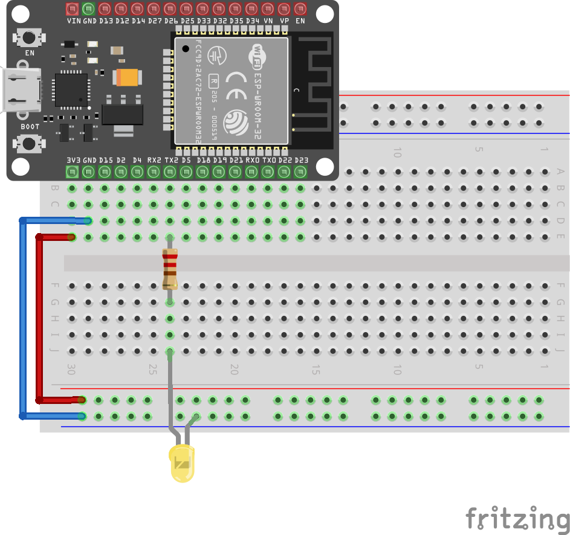
- Zmontuj obwód: wyprowadzenie ESP32 → rezystor 220 Ω → dłuższa nóżka diody żółtej; krótsza nóżka → masa.
- Otwórz plik
P01_bazowy.inoi przeczytaj komentarze. Znajdź cztery MIEJSCA — w nich będziesz pracował przez cały projekt. - Wgraj program. Dioda zacznie migać.
- Policz stoperem, ile razy zapali się w ciągu 30 sekund.
- W aucie kierunkowskaz miga 60–120 razy na minutę. Zmień czasMigania w MIEJSCU A tak, aby trafić w ten zakres, i wgraj ponownie.
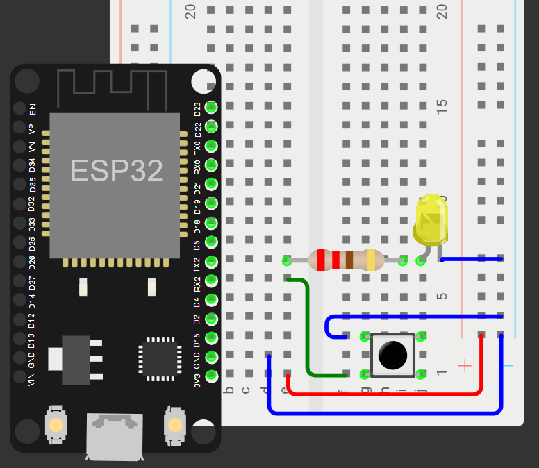
- Wyłącz zasilanie. Dołóż przycisk: jedna nóżka do wyprowadzenia z planszy, druga do masy.
- Przepisz do programu trzy poniższe fragmenty — każdy do swojego MIEJSCA.
- Wgraj program i sprawdź: dioda miga tylko przy wciśniętym przycisku.
- Zmierz multimetrem napięcie na wyprowadzeniu przycisku — zwolniony i wciśnięty.
Nowa zmienna z numerem wyprowadzenia przycisku.
// przycisk lewego kierunkowskazu (manetka) const int pinPrzyciskL = ____; // wpisz numer wyprowadzenia
Podpowiedź: numer znajdziesz w zakładce Schematy, w mapie wyprowadzeń
Ustawienie przycisku jako wejścia.
// INPUT_PULLUP: to jest wejście, a płytka sama pilnuje, // żeby przy zwolnionym przycisku był tam stan wysoki. // Dlatego przycisk WCIŚNIĘTY daje stan niski (LOW). pinMode(____________, INPUT_PULLUP);
Podpowiedź: w lukę wpisz nazwę zmiennej, którą przed chwilą dodałeś do MIEJSCA A
Ten fragment ZASTĘPUJE dotychczasową zawartość MIEJSCA C.
// digitalRead sprawdza, co jest na wejściu. // Podwójny znak == znaczy "sprawdź, czy równa się". // Pojedynczy = znaczyłby "wpisz wartość" - to inne polecenie. if (digitalRead(pinPrzyciskL) == LOW) { digitalWrite(pinDiodaL, swieci); // przycisk wciśnięty: migaj } else { digitalWrite(pinDiodaL, LOW); // zwolniony: dioda zgaszona }
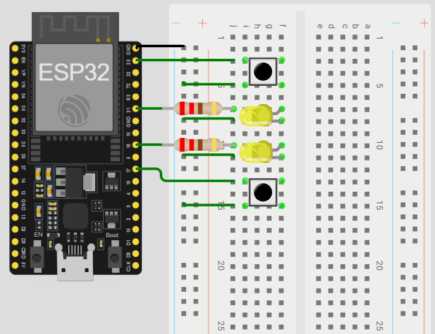
- Wyłącz zasilanie. Dołóż drugą diodę z rezystorem i drugi przycisk.
- Przepisz fragmenty. Zwróć uwagę: MIEJSCE C tym razem tylko uzupełniasz — dopisujesz drugi warunek pod pierwszym.
- Sprawdź niezależność stron: lewy przycisk nie może uruchamiać prawej diody.
- Sprawdź, co się dzieje po wciśnięciu obu przycisków naraz.
// prawy kierunkowskaz const int pinDiodaP = ____; // wpisz numer wyprowadzenia diody const int pinPrzyciskP = ____; // wpisz numer wyprowadzenia przycisku
Podpowiedź: obie wartości są w mapie wyprowadzeń
pinMode(pinDiodaP, OUTPUT); pinMode(pinPrzyciskP, INPUT_PULLUP);
Dopisujesz pod istniejącym warunkiem — nic nie usuwasz.
// dopisz pod warunkiem dla strony lewej if (digitalRead(pinPrzyciskP) == LOW) { digitalWrite(____________, swieci); } else { digitalWrite(pinDiodaP, LOW); }
Podpowiedź: w lukę wpisz nazwę zmiennej prawej diody
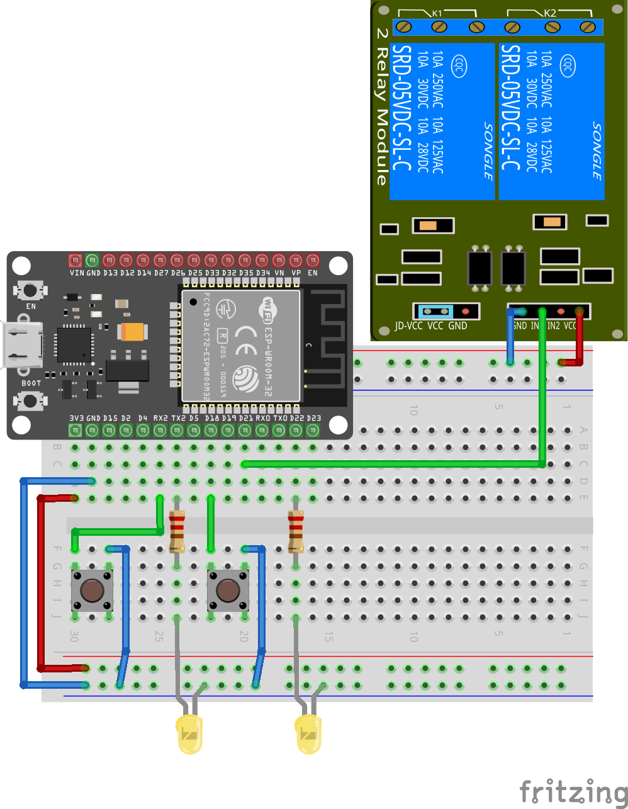
- Wyłącz zasilanie. Zmontuj sterowanie: wyprowadzenie ESP32 → rezystor 1 kΩ → baza tranzystora; emiter do masy; kolektor do wejścia modułu przekaźnika. Zasilanie modułu z szyny 5 V.
- Podnieś rękę — nauczyciel sprawdzi układ przed zasileniem.
- Przepisz fragmenty i wgraj program.
- Policz kliknięcia przekaźnika w 30 sekund.
// sterowanie przekaźnikiem przez tranzystor const int pinPrzekaznik = ____;
Podpowiedź: numer z mapy wyprowadzeń, wiersz z tranzystorem
pinMode(pinPrzekaznik, OUTPUT);
digitalWrite(pinPrzekaznik, LOW); // na starcie przekaźnik wyłączony
Dopisujesz na końcu MIEJSCA C.
// Znak || znaczy "lub": wystarczy, że miga którakolwiek strona. // Znak && znaczy "oraz": oba warunki muszą być spełnione naraz. bool ktoraskolwiek = (digitalRead(pinPrzyciskL) == LOW) || (digitalRead(pinPrzyciskP) == LOW); digitalWrite(pinPrzekaznik, ktoraskolwiek && swieci);
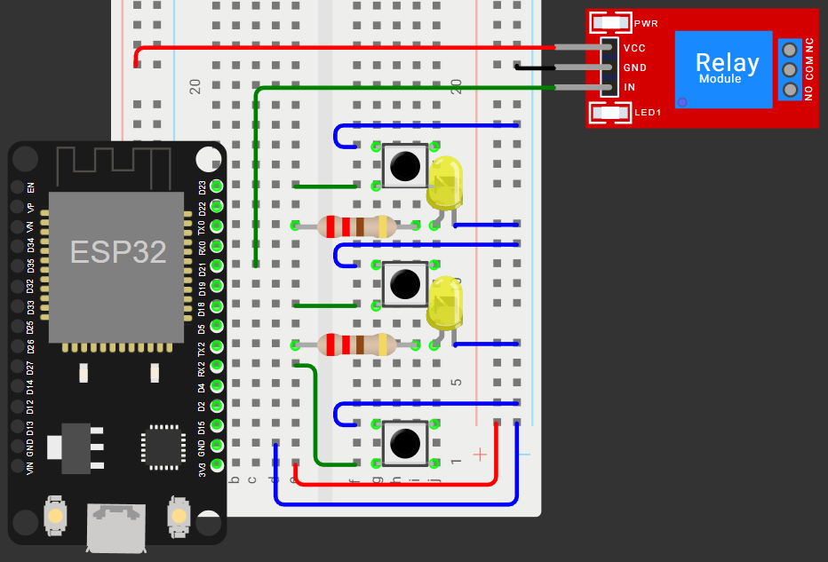
- Dołóż trzeci przycisk — włącznik świateł awaryjnych.
- Przepisz fragmenty. W MIEJSCU C zastępujesz całą dotychczasową zawartość — nowa wersja robi to samo, tylko porządniej.
- Sprawdź, czy obie diody migają w tym samym rytmie.
const int pinPrzyciskAw = ____; // przycisk świateł awaryjnych
Podpowiedź: numer z mapy wyprowadzeń
pinMode(pinPrzyciskAw, INPUT_PULLUP);
Ten fragment ZASTĘPUJE całą zawartość MIEJSCA C.
// Najpierw ustalamy, które strony mają migać, // a dopiero na końcu zapalamy diody. Dzięki temu // światła awaryjne mogą "dołożyć" obie strony naraz. bool migaLewa = (digitalRead(pinPrzyciskL) == LOW); bool migaPrawa = (digitalRead(pinPrzyciskP) == LOW); if (digitalRead(____________) == LOW) { // awaryjne wciśnięte migaLewa = true; migaPrawa = true; } digitalWrite(pinDiodaL, migaLewa && swieci); digitalWrite(pinDiodaP, migaPrawa && swieci); digitalWrite(pinPrzekaznik, (migaLewa || migaPrawa) && swieci);
Podpowiedź: w lukę wpisz nazwę zmiennej przycisku awaryjnych
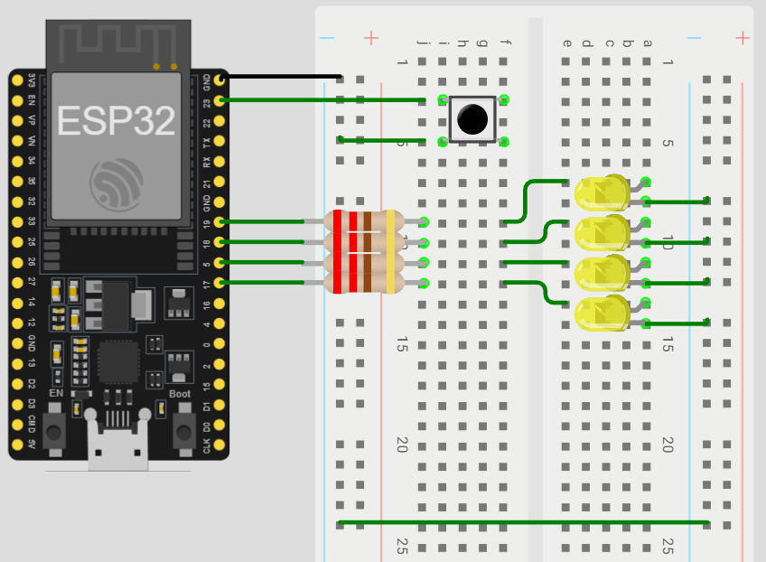
- Dołóż diody z rezystorami, aby po lewej stronie były cztery.
- Przepisz fragmenty. Nowość: pojawia się własna funkcja w MIEJSCU D.
- Dobierz opóźnienie tak, aby efekt wyglądał jak w nowym aucie. Wypróbuj co najmniej trzy wartości.
- Zmierz stoperem czas przebiegu fali przez cztery diody.
// TABLICA to kilka wartości pod jedną nazwą. // pinyLewe[0] to pierwsza dioda, pinyLewe[1] druga i tak dalej. // KOLEJNOŚĆ W NAWIASACH KLAMROWYCH WYZNACZA KIERUNEK FALI. int pinyLewe[4] = {18, 19, 21, 22}; int opoznienieFali = ____; // odstęp między diodami w milisekundach unsigned long startFali = 0; int aktualnaDioda = 0;
Podpowiedź: zacznij od wartości między 50 a 200 i sprawdź, jak wygląda
// PĘTLA FOR: powtórz to samo dla i = 0, 1, 2, 3. // Zapis i++ znaczy "zwiększ i o jeden". for (int i = 0; i < 4; i++) { pinMode(pinyLewe[i], OUTPUT); }
Funkcje umieszczamy poza setup() i loop() — w MIEJSCU D.
// Funkcja zapala kolejne diody jedna po drugiej. // Wywołujemy ją z MIEJSCA C, gdy manetka jest wciśnięta. void falaLewa() { if (millis() - startFali >= opoznienieFali) { startFali = millis(); if (aktualnaDioda < 4) { digitalWrite(pinyLewe[aktualnaDioda], HIGH); aktualnaDioda++; } else { for (int i = 0; i < 4; i++) digitalWrite(pinyLewe[i], LOW); aktualnaDioda = 0; } } }
Usuń wcześniejszą linię sterującą lewą diodą i wstaw ten fragment.
// dopisz na końcu, zamiast dotychczasowego sterowania lewą diodą if (migaLewa) { ____________(); // wywołanie własnej funkcji } else { for (int i = 0; i < 4; i++) digitalWrite(pinyLewe[i], LOW); aktualnaDioda = 0; }
Podpowiedź: w lukę wpisz nazwę funkcji, którą dodałeś do MIEJSCA D
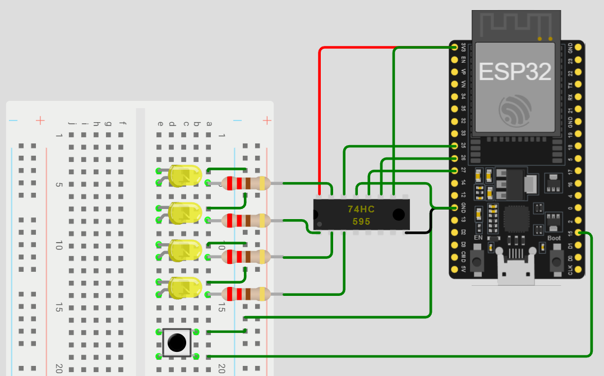
- Zmontuj układ 74HC595 według schematu.
- Przepisz fragmenty. Rejestr steruje ośmioma diodami, choć zajmuje tylko trzy wyprowadzenia płytki.
- Zbuduj własną sekwencję, zmieniając wzorce w tablicy klatek.
- Zapisz, ile wyprowadzeń zaoszczędziłeś względem sterowania bezpośredniego.
const int pinDANE = ____; // wyprowadzenie 14 układu const int pinZATRZASK = ____; // wyprowadzenie 12 układu const int pinZEGAR = ____; // wyprowadzenie 11 układu // Każda liczba to jedna KLATKA animacji. // Zapis 0b00000001 czyta się od prawej: świeci tylko pierwsza dioda. // 0b00000011 - dwie pierwsze. 0b11111111 - wszystkie osiem. byte klatki[] = { 0b00000001, 0b00000011, 0b00000111, 0b00001111, 0b00011111, 0b00111111, 0b01111111, 0b11111111 }; int klatka = 0; unsigned long startKlatki = 0;
Podpowiedź: trzy numery znajdziesz w mapie wyprowadzeń, wiersze z 74HC595
pinMode(pinDANE, OUTPUT);
pinMode(pinZATRZASK, OUTPUT);
pinMode(pinZEGAR, OUTPUT);
pokaz(0); // na starcie wszystkie diody zgaszone
// Wysyła jedną klatkę do rejestru. // shiftOut wysyła osiem bitów jeden po drugim, // a zatrzask sprawia, że diody zmieniają się wszystkie naraz. void pokaz(byte wzorzec) { digitalWrite(pinZATRZASK, LOW); shiftOut(pinDANE, pinZEGAR, MSBFIRST, wzorzec); digitalWrite(pinZATRZASK, HIGH); }
// dopisz na końcu MIEJSCA C
if (millis() - startKlatki >= 120) {
startKlatki = millis();
pokaz(klatki[klatka]);
klatka++;
if (klatka >= 8) klatka = 0;
}
Podsumowanie: Kierunkowskazy i światła awaryjne
Klakson i sygnał cofania
Zbudujesz dwutonowy klakson i przerywany sygnał biegu wstecznego, a na koniec przełączysz klakson na obwód mocy z przekaźnikiem.
Program bazowy tego projektu
W tym projekcie wgrywasz jeden program:
P02_bazowy.ino. W kolejnych etapach nie dostajesz nowych plików — dopisujesz do niego fragmenty
kodu z tej instrukcji. Każdy fragment ma podane miejsce, w które trafia.

- Zmontuj obwód z brzęczykiem aktywnym i przyciskiem według schematu.
- Otwórz
P02_bazowy.ino. Na górze są gotowe narzędzia dźwięku — nie zmieniasz ich, ale od etapu 2 będziesz z nich korzystał. - Wgraj program i sprawdź działanie.
- Brzęczyk aktywny ma jeden, stały dźwięk — nie da się go zmienić.

- Wymień brzęczyk aktywny na pasywny. Sam nie wydaje dźwięku — musi dostać sygnał o zadanej częstotliwości.
- Przepisz fragmenty do MIEJSC A, B i C.
- Wypróbuj kilka częstotliwości, na przykład 400, 1000, 2000 i 3000 Hz. Znajdź tę, przy której brzęczyk gra najgłośniej.
// Częstotliwość to liczba drgań membrany na sekundę. // Im większa, tym wyższy dźwięk. Jednostka: herc (Hz). int czestotliwosc = ____;
Podpowiedź: zacznij od 1000 i sprawdź, jak brzmi
// przygotowanie wyjścia do wytwarzania dźwięku
dzwiekPrzygotuj(pinBrzeczyka);
Ten fragment ZASTĘPUJE dotychczasową zawartość MIEJSCA C (linię z digitalWrite).
dzwiekGraj(pinBrzeczyka, czestotliwosc);
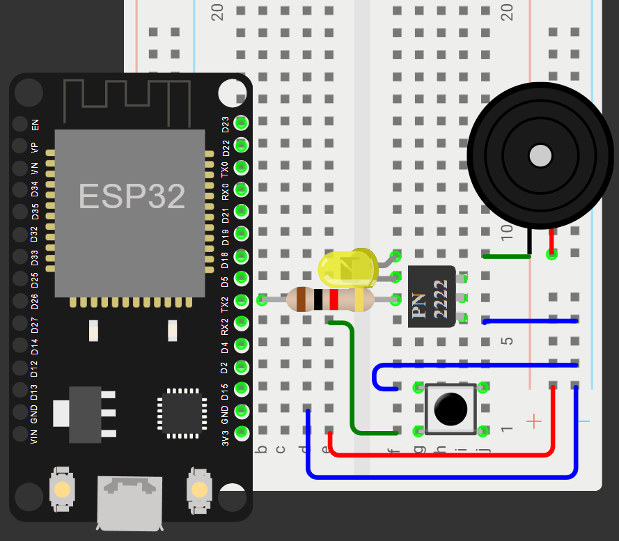
- Przepisz fragmenty. Układ zostaje bez zmian — pracujesz tylko w kodzie.
- Dobierz obie częstotliwości i czas przełączania tak, aby brzmiało jak klakson, a nie jak alarm.
int ton1 = ____; // dźwięk niższy [Hz] int ton2 = ____; // dźwięk wyższy [Hz] int czasTonu = ____; // jak długo trwa każdy z nich [ms]
Podpowiedź: prawdziwy klakson ma tony w okolicach 400 i 500 Hz
Ten fragment ZASTĘPUJE zawartość MIEJSCA C.
// Dwa tony grane na przemian brzmią donośniej niż jeden.
dzwiekGraj(pinBrzeczyka, ton1);
delay(czasTonu);
dzwiekGraj(pinBrzeczyka, ton2);
delay(czasTonu);

- Przepisz fragmenty. Przycisk oznacza teraz włączony bieg wsteczny.
- Dobierz czas sygnału i przerwy — krótki pisk, wyraźna przerwa.
- Podłącz oscyloskop do wyprowadzenia brzęczyka, masę sondy do szyny „−”.
- Zmierz częstotliwość i porównaj z wartością wpisaną w programie.
int fCofanie = 2000; // wysokość dźwięku sygnału cofania [Hz] int czasSygnalu = ____; // jak długo trwa pisk [ms] int czasPrzerwy = ____; // jak długa jest cisza [ms]
Podpowiedź: w autach dostawczych pisk trwa około 300 ms
Ten fragment ZASTĘPUJE zawartość MIEJSCA C.
dzwiekGraj(pinBrzeczyka, fCofanie);
delay(czasSygnalu);
dzwiekCisza(pinBrzeczyka);
delay(____________);
Podpowiedź: w lukę wpisz nazwę zmiennej z czasem przerwy
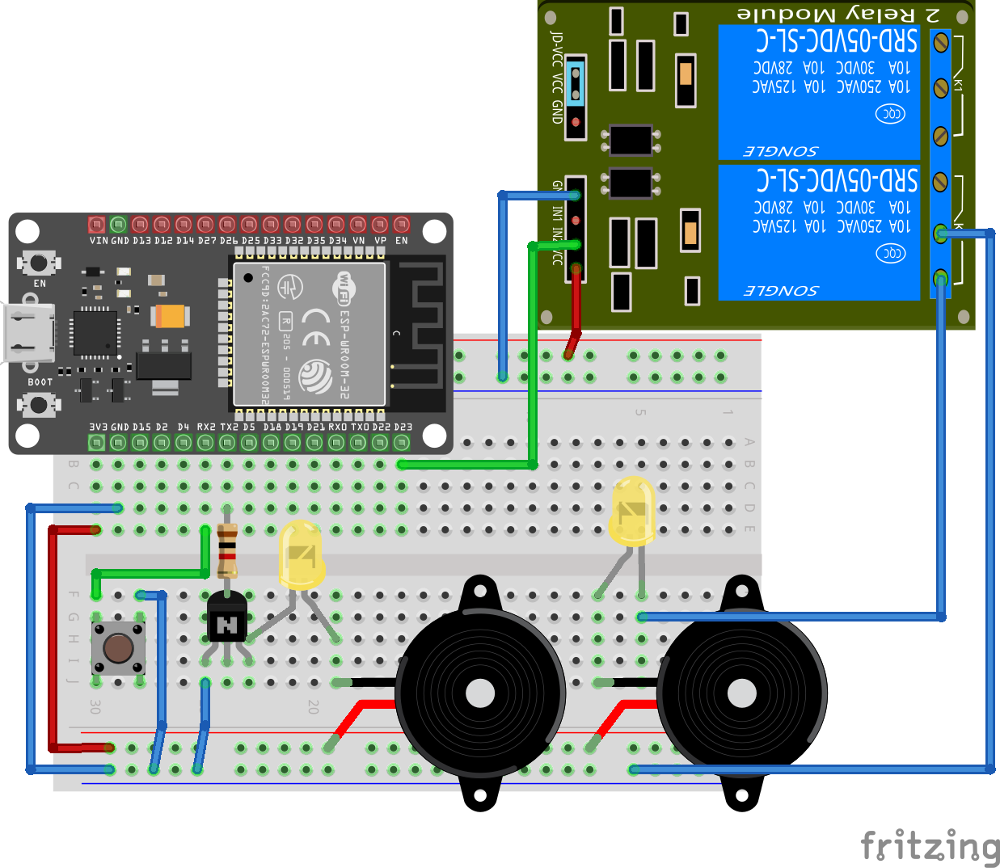
- Obejrzyj moduł przekaźnika. Ma wlutowaną diodę zaporową przy cewce, transoptor oddzielający sterowanie od obwodu mocy, diodę LED pokazującą stan oraz zworkę wyboru poziomu wyzwalania.
- Ustaw zworkę na wyzwalanie stanem niskim (oznaczenie LOW). Dzięki temu, razem z tranzystorem, logika będzie prosta: stan wysoki na wyprowadzeniu płytki znaczy „przekaźnik załączony”.
- Wyłącz zasilanie. Przełóż brzęczyk tak, aby był załączany przez zestyk przekaźnika, a sam przekaźnik sterowany tranzystorem przez rezystor 1 kΩ.
- Diody 1N4007 tutaj nie dokładasz — moduł ma własną, wlutowaną fabrycznie. Zobaczysz ją na płytce obok cewki. Po co tam jest, zmierzysz oscyloskopem w projekcie 8.
- Podnieś rękę — nauczyciel sprawdzi układ przed zasileniem.
- Wgraj program bazowy bez zmian i sprawdź działanie.
const int pinPrzekaznik = ____; // przez rezystor 1 kOhm na bazę tranzystora
Podpowiedź: numer z mapy wyprowadzeń, wiersz z tranzystorem
pinMode(pinPrzekaznik, OUTPUT); digitalWrite(pinPrzekaznik, LOW);
Dopisujesz na końcu MIEJSCA C — reszta zostaje.
// dopisz na końcu: przekaźnik załącza obwód mocy klaksonu
digitalWrite(pinPrzekaznik, HIGH);

- Wróć do brzęczyka pasywnego podłączonego bezpośrednio.
- Przepisz fragmenty. Kolejne naciśnięcia przycisku przełączają trzy poziomy głośności.
- Dobierz trzy wartości i oceń różnicę słuchem.
// WYPEŁNIENIE to udział czasu, przez który napięcie jest włączone. // Przy małym wypełnieniu do brzęczyka trafia mało energii - gra ciszej. // Skala: 0 (cisza) do 255. Najgłośniej jest w okolicach 128. int poziomy[3] = {____, ____, ____}; int wybrany = 0; bool poprzedniStan = HIGH;
Podpowiedź: zacznij od wartości w rodzaju 20, 70 i 128
Ten fragment ZASTĘPUJE zawartość MIEJSCA C.
// pusto - obsługę przenosimy do MIEJSCA D
Dodatkowo dopisz wywołanie obsluzGlosnosc(); jako pierwszą linię
wewnątrz funkcji loop().
// Wykrywamy MOMENT naciśnięcia, a nie samo trzymanie przycisku: // stan zmienił się z wysokiego na niski. void obsluzGlosnosc() { bool stan = digitalRead(pinPrzycisk); if (poprzedniStan == HIGH && stan == LOW) { dzwiekGraj(pinBrzeczyka, 2000); dzwiekGlosnosc(pinBrzeczyka, poziomy[wybrany]); delay(600); dzwiekGlosnosc(pinBrzeczyka, 0); wybrany++; if (wybrany > 2) wybrany = 0; delay(200); // krótka zwłoka na drgania styków } poprzedniStan = stan; }

- Przepisz fragmenty.
- Ustaw częstotliwość początkową, końcową i krok zmiany.
- Sprawdź, jak zmiana kroku wpływa na płynność efektu.
int fOd = ____; // częstotliwość początkowa [Hz] int fDo = ____; // częstotliwość końcowa [Hz] int krok = ____; // o ile Hz zmienia się za każdym razem
Podpowiedź: im mniejszy krok, tym płynniejszy efekt
Ten fragment ZASTĘPUJE zawartość MIEJSCA C.
// PĘTLA FOR: f rośnie od fOd do fDo, za każdym razem o krok. for (int f = fOd; f <= fDo; f = f + krok) { dzwiekGraj(pinBrzeczyka, f); delay(5); } // i z powrotem w dół for (int f = fDo; f >= fOd; f = f - ____) { dzwiekGraj(pinBrzeczyka, f); delay(5); }
Podpowiedź: w lukę wpisz nazwę zmiennej z krokiem
Podsumowanie: Klakson i sygnał cofania
Sprawdzenie stanowiska — po zajęciach 0 / 0
Rozłóż układ, złóż komplet i przelicz elementy ponownie. Zaznacz te, które wracają do pudełka sprawne. Dopiero potem zamknij kartę.
Schematy i wyprowadzenia
Ta zakładka jest zawsze pod ręką. Wracaj tu, gdy nie wiesz, gdzie coś podłączyć.
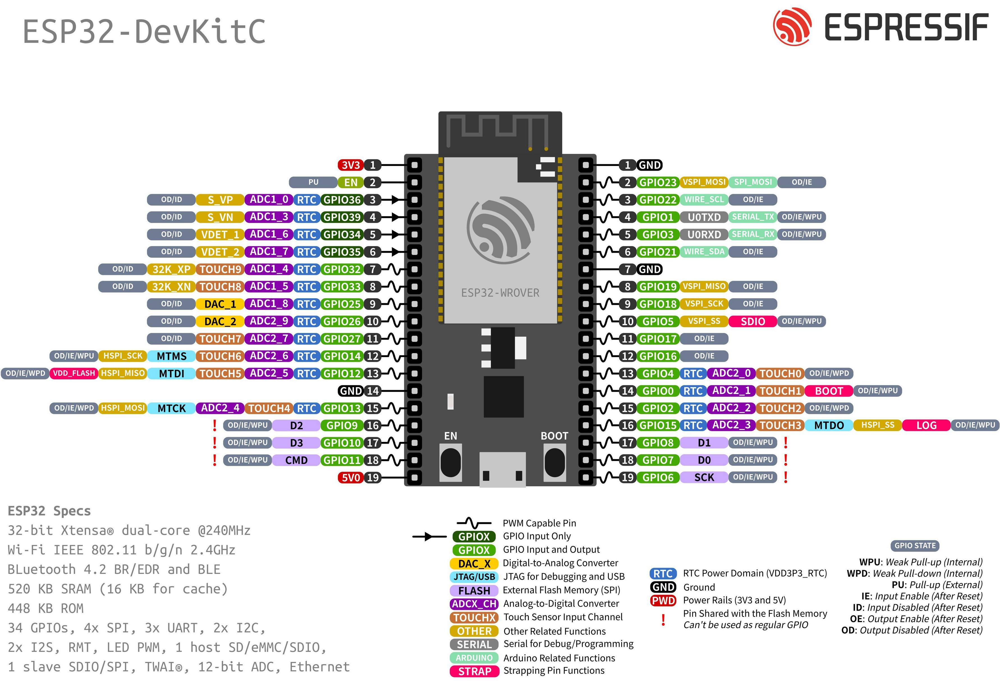
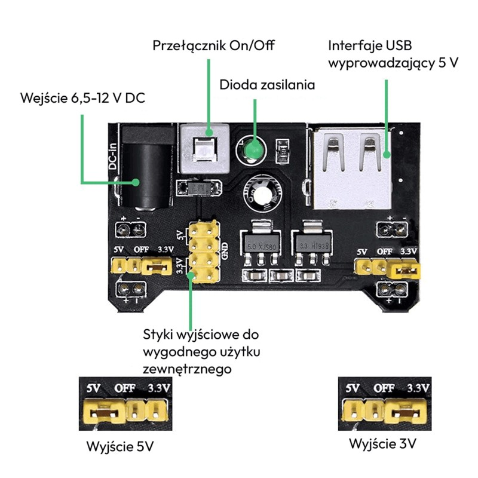
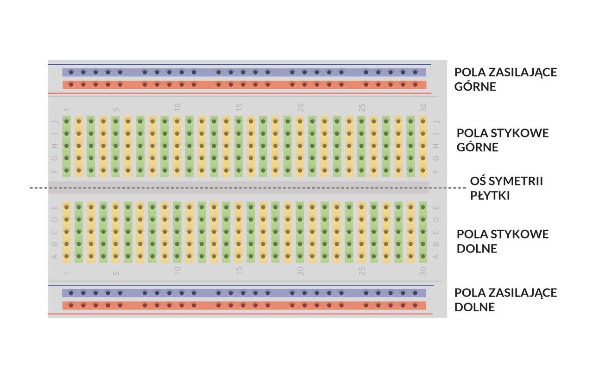
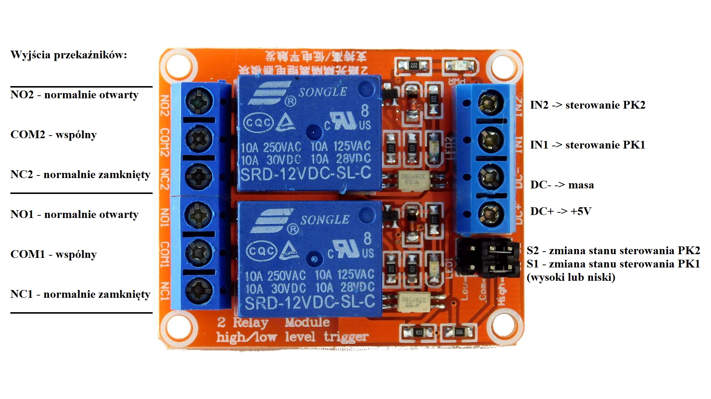
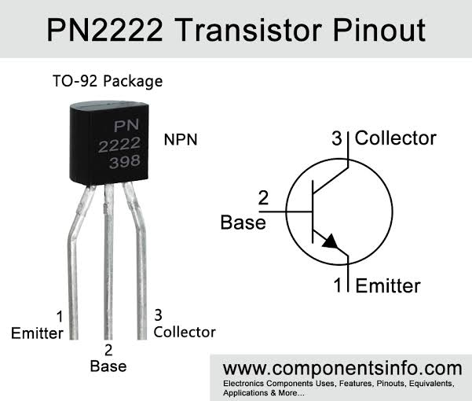
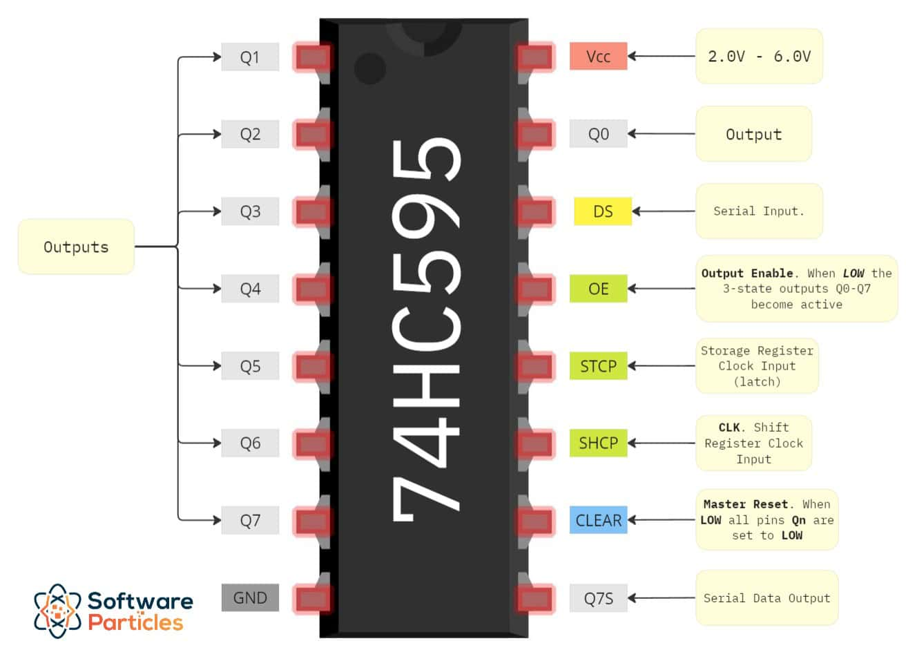
Mapa wyprowadzeń stanowiska — obowiązuje w całym bloku
Te same numery są wpisane w programach. Jeśli wepniesz element gdzie indziej, musisz zmienić numer w kodzie.
| Wyprowadzenie | Element | Projekt / etap |
|---|---|---|
| GPIO 4 | przycisk lewy (w projekcie 2: przycisk klaksonu) | P1 E2–E7, P2 E1–E7 |
| GPIO 16 | przycisk prawy | P1 E3–E5 |
| GPIO 17 | przycisk świateł awaryjnych | P1 E5 |
| GPIO 18 | dioda lewa (w sekwencji: pierwsza) | P1 E1–E6 |
| GPIO 19 | dioda prawa (w sekwencji: druga) | P1 E3–E6 |
| GPIO 21 | dioda sekwencji — trzecia | P1 E6 |
| GPIO 22 | dioda sekwencji — czwarta | P1 E6 |
| GPIO 23 | tranzystor PN2222 → moduł przekaźnika | P1 E4–E5, P2 E5 |
| GPIO 25 | brzęczyk | P2 E1–E7 |
| GPIO 13 | 74HC595 — DATA (wyprowadzenie 14 układu) | P1 E7 |
| GPIO 14 | 74HC595 — LATCH (wyprowadzenie 12 układu) | P1 E7 |
| GPIO 27 | 74HC595 — CLOCK (wyprowadzenie 11 układu) | P1 E7 |
Nie używaj wyprowadzeń 6–11 (zajęte przez pamięć płytki) ani 34–39 (potrafią tylko czytać, nie potrafią sterować).
Prawo Ohma i moc — wzory
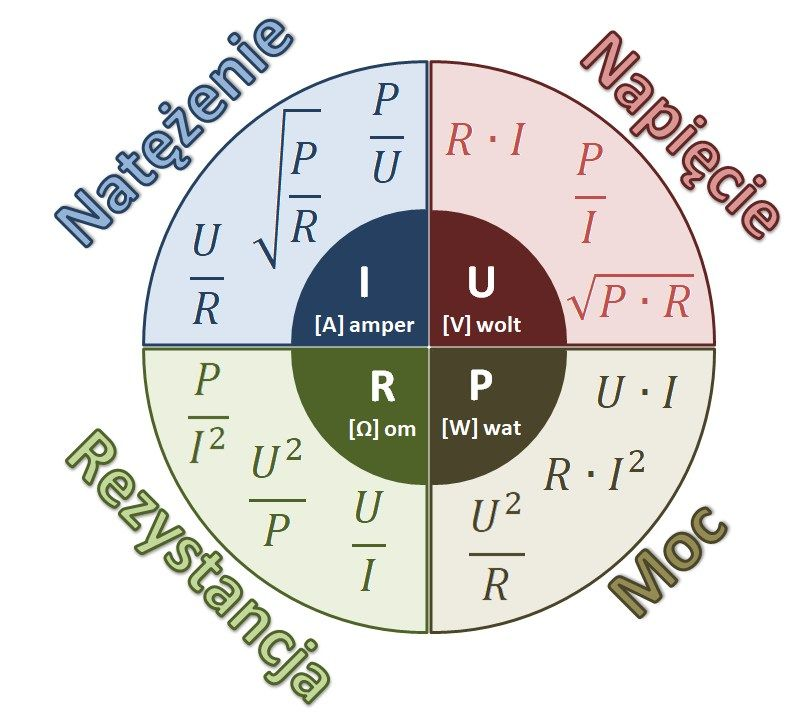
| Szukasz | Wzór | Jednostka |
|---|---|---|
| Napięcie U | U = I · R | wolt [V] |
| Natężenie I | I = U ÷ R | amper [A] |
| Opór R | R = U ÷ I | om [Ω] |
| Moc P | P = U · I | wat [W] |
| Moc — inaczej | P = I² · R | wat [W] |
| Moc — inaczej | P = U² ÷ R | wat [W] |
Uwaga na jednostki: wynik wzoru I = U ÷ R wychodzi w amperach.
Aby otrzymać miliampery, pomnóż go przez 1000. Przykład: 3 V ÷ 220 Ω =
0,0136 A, czyli około 13,6 mA.
Kod barwny rezystorów
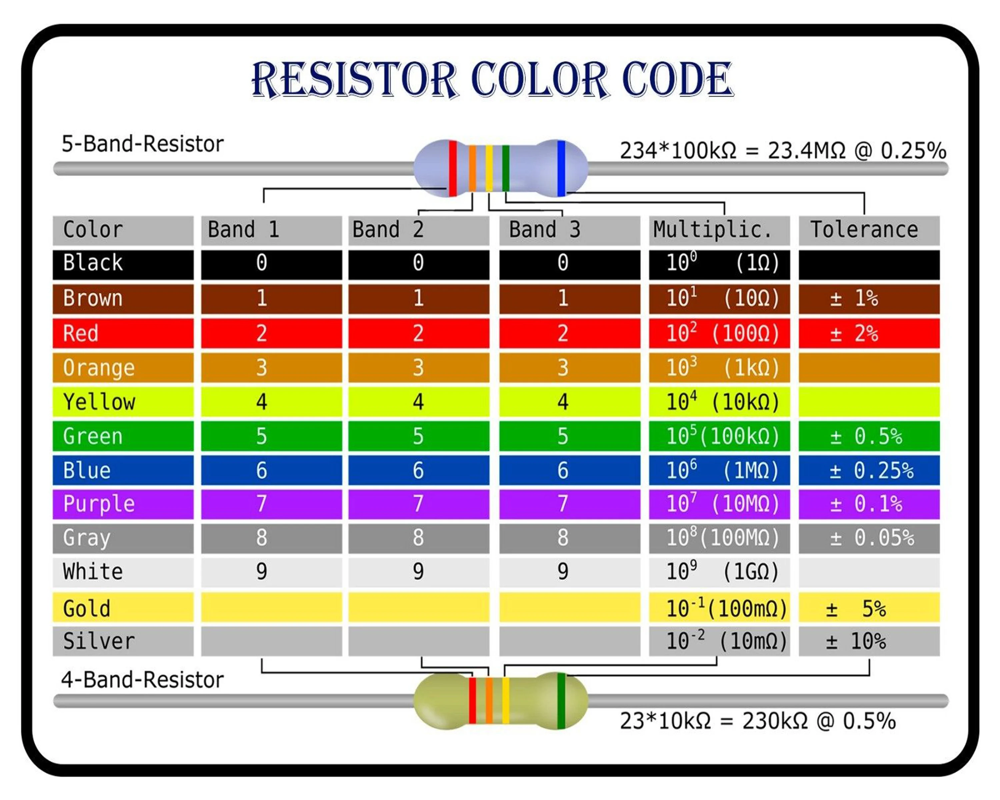
| Kolor | Cyfra | Mnożnik | Tolerancja |
|---|---|---|---|
| czarny | 0 | ×1 | — |
| brązowy | 1 | ×10 | ±1 % |
| czerwony | 2 | ×100 | — |
| pomarańczowy | 3 | ×1 000 | — |
| żółty | 4 | ×10 000 | — |
| zielony | 5 | ×100 000 | — |
| niebieski | 6 | ×1 000 000 | — |
| fioletowy | 7 | — | — |
| szary | 8 | — | — |
| biały | 9 | — | — |
| złoty | — | — | ±5 % |
| srebrny | — | — | ±10 % |
Przykład: brązowy–czarny–czerwony–złoty → 1, 0, ×100 → 1000 Ω (1 kΩ), ±5 %.
Jak rozpoznać elementy
| Element | Jak rozpoznać | Na co uważać |
|---|---|---|
| Dioda LED | przezroczysta obudowa, dwie nóżki różnej długości | dłuższa = anoda (do plusa); zawsze przez rezystor |
| Dioda 1N4007 | czarna, z jasnym paskiem | pasek to katoda — strona, do której prąd wchodzi |
| Tranzystor PN2222 | czarna obudowa z płaskim bokiem, trzy nóżki | kolejność wyprowadzeń — sprawdź na schemacie |
| Brzęczyk aktywny | zaklejony otwór, ma oznaczenie „+" | gra sam po podaniu napięcia |
| Brzęczyk pasywny | widoczna membrana, zwykle bez oznaczenia „+" | bez sygnału o zadanej częstotliwości milczy |
| Termistor NTC | mały, ciemny, dwie nóżki, bez pasków | łatwo pomylić z kondensatorem |
Programowanie ESP32 — od zera
Krótko i po kolei: podłączenie płytki, ustawienia programu, z czego składa się kod, jak go wgrać i co robić, gdy pojawi się błąd.
1. Podłącz płytkę do komputera
- Weź kabel USB ze stanowiska i połącz płytkę z komputerem.
- Na płytce powinna zapalić się mała czerwona dioda — to znak, że ma zasilanie.
- Jeśli nic się nie świeci: spróbuj innego gniazda USB, a potem innego kabla. Część kabli USB służy tylko do ładowania i nie przesyła danych — to najczęstsza przyczyna problemu.
2. Ustaw program Arduino IDE
- Uruchom Arduino IDE.
- Menu
Narzędzia → Płytka— wybierz ESP32 Dev Module. - Menu
Narzędzia → Port— wybierz port, który pojawił się po podłączeniu płytki (np.COM5). Jeśli nie wiesz który: odłącz kabel, sprawdź listę, podłącz ponownie — nowy port to twoja płytka.
3. Z czego składa się program
Każdy program dla płytki ma dwie części:
void setup() {
// wykonuje się RAZ, zaraz po włączeniu
// tutaj ustawiasz, co jest wejściem, a co wyjściem
}
void loop() {
// wykonuje się W KÓŁKO, bez końca
// tutaj dzieje się właściwe działanie układu
}setup to przygotowanie — jak ustawienie lusterek przed jazdą. loop to sama jazda, powtarzana bez przerwy tysiące razy na sekundę.
4. Podstawy zapisu
| Zapis | Co robi |
|---|---|
| int pinDiody = 2; | tworzy pudełko o nazwie pinDiody i wkłada do niego liczbę 2 |
| ; | średnik kończy każde polecenie — jak kropka w zdaniu |
| // tekst | komentarz — notatka dla człowieka, płytka to pomija |
| pinMode(2, OUTPUT); | ustawia wyprowadzenie 2 jako wyjście (steruje czymś) |
| pinMode(4, INPUT_PULLUP); | ustawia wyprowadzenie 4 jako wejście (czyta przycisk) |
| digitalWrite(2, HIGH); | podaje napięcie na wyprowadzenie 2 — dioda zapala się |
| digitalWrite(2, LOW); | odcina napięcie — dioda gaśnie |
| delay(500); | czeka 500 milisekund, czyli pół sekundy |
| digitalRead(4) | sprawdza, czy na wejściu jest napięcie |
Przykład — dioda miga co pół sekundy:
int pinDiody = 2;
void setup() {
pinMode(pinDiody, OUTPUT);
}
void loop() {
digitalWrite(pinDiody, HIGH); // zapal
delay(500); // czekaj pół sekundy
digitalWrite(pinDiody, LOW); // zgaś
delay(500); // czekaj pół sekundy
}Warunek — „jeżeli":
if (digitalRead(pinPrzycisku) == LOW) {
digitalWrite(pinDiody, HIGH); // przycisk wciśnięty → zapal
} else {
digitalWrite(pinDiody, LOW); // w przeciwnym razie → zgaś
}= oznacza „wpisz wartość",
a == oznacza „sprawdź, czy równa się". W warunku zawsze używasz ==.Pętla — powtórz kilka razy:
for (int i = 0; i < 4; i++) {
digitalWrite(pinyDiod[i], HIGH);
delay(100);
}To znaczy: weź kolejno diody o numerach 0, 1, 2, 3 i zapal każdą z odstępem 100 ms.
Tablica — kilka wartości pod jedną nazwą:
int pinyDiod[4] = {2, 4, 5, 18};Kolejność w nawiasach klamrowych ma znaczenie — to ona wyznacza kolejność zapalania.
5. Wgraj program do płytki
- Kliknij ✓ Zweryfikuj — program zostanie sprawdzony, ale jeszcze nie wgrany.
- Kliknij → Wgraj. Na dole pojawi się pasek postępu i napisy o zapisie.
- Poczekaj na komunikat o zakończeniu. Płytka sama się zrestartuje i zacznie działać.
- Jeśli wgrywanie się zatrzyma: przytrzymaj na płytce przycisk BOOT, aż zacznie się zapis, a potem puść.
6. Gdy pojawi się błąd
Czerwony tekst na dole to nie awaria — to informacja, co poprawić. Czytaj zawsze pierwszą linię błędu, reszta zwykle z niej wynika. W nawiasie po nazwie pliku jest numer linii — tam zacznij szukać.
| Komunikat | Co znaczy | Co zrobić |
|---|---|---|
| expected ';' before... | brakuje średnika | sprawdź koniec linii powyżej wskazanej |
| ... was not declared in this scope | nieznana nazwa | literówka albo brak deklaracji zmiennej na górze pliku |
| expected '}' at end of input | brakuje klamry zamykającej | policz klamry — każda otwierająca musi mieć zamykającą |
| stray '#' in program | przypadkowy znak w kodzie | usuń znak z linii wskazanej w błędzie |
| Failed to connect to ESP32 | płytka nie odpowiada | sprawdź port, przytrzymaj BOOT, zmień kabel |
| Port not found / brak portu | komputer nie widzi płytki | inny kabel, inne gniazdo, zgłoś nauczycielowi |
| A fatal error occurred | przerwane połączenie | odłącz i podłącz kabel, wybierz port ponownie |
7. Program się wgrał, ale układ nie działa
To już nie jest błąd programu, tylko układu. Sprawdź po kolei:
- Czy numer wyprowadzenia w programie zgadza się z tym, gdzie faktycznie wpiąłeś przewód?
- Czy dioda nie jest odwrotnie? Dłuższa nóżka do plusa.
- Czy masa jest wspólna dla wszystkich elementów?
- Czy przewody na pewno są sprawne?
- Czy zasilanie jest włączone i zworki ustawione prawidłowo?